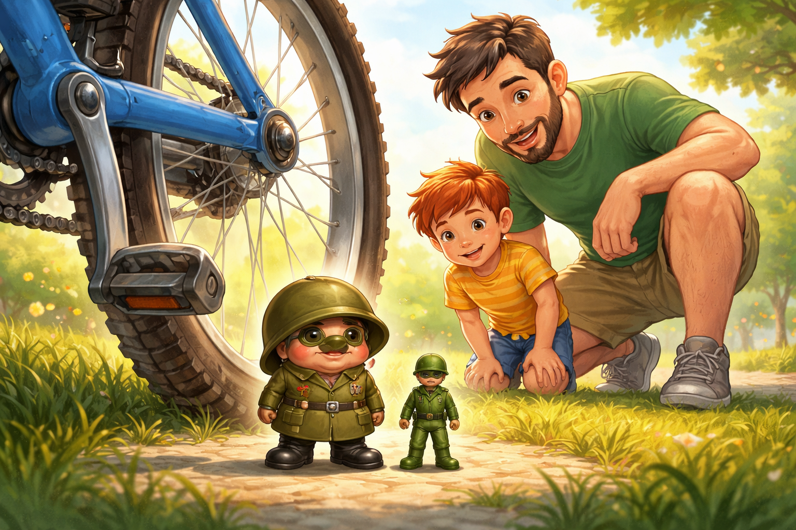
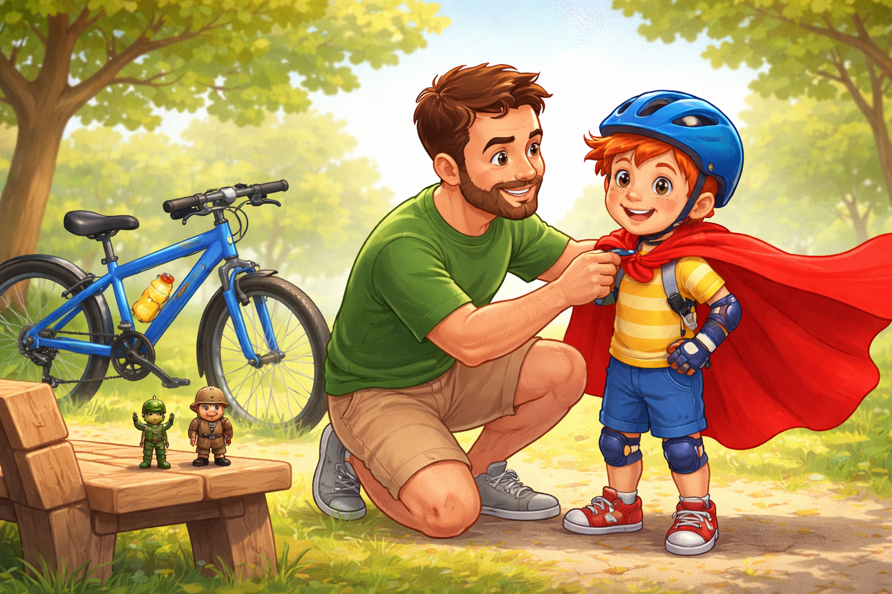
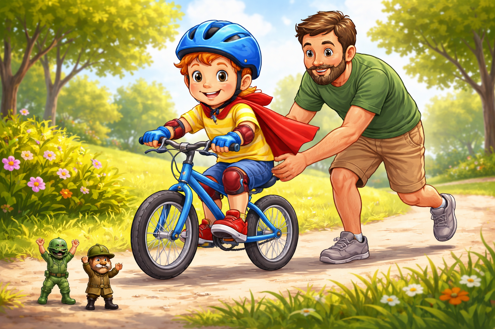
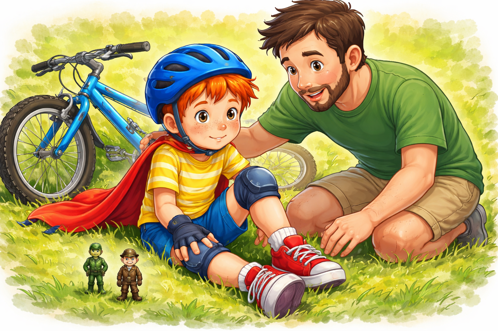
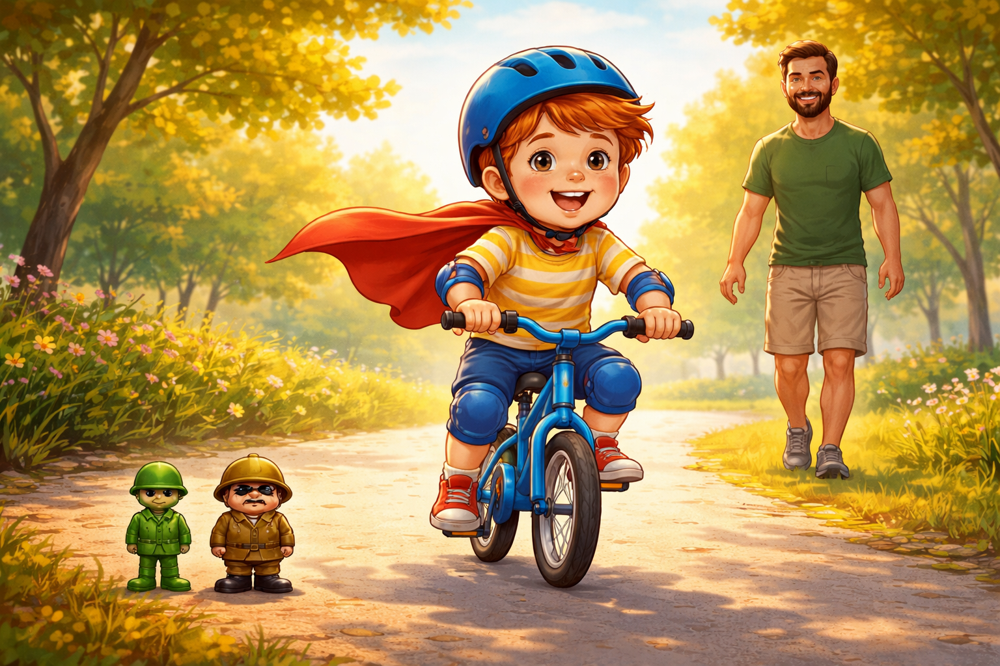
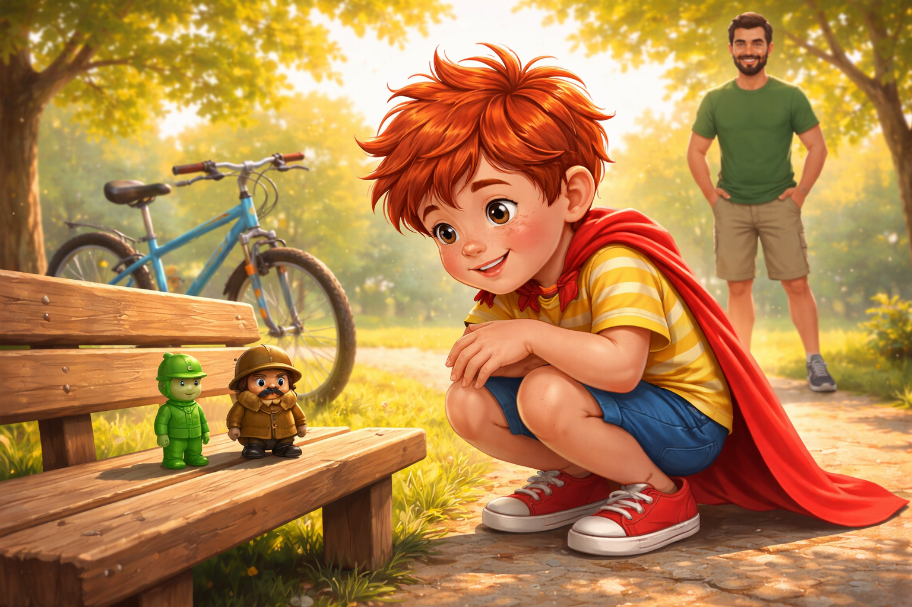

Палавко кара колело
Беше слънчева неделя. Палавко и татко му бяха в парка, където алеите миришеха на топла трева, а листата шумоляха така, сякаш си разказваха тайни.
До една пейка стоеше чисто ново синьо колело. Имаше звънче, светлоотразители и гуми, които миришеха на чисто ново приключение.

Палавко го гледаше с огромни очи.
- Ехааа... на кого е това колело?
Татко му се усмихна.
- Твое е.
- Мое ли?
- Точно така.
Палавко веднага хвана кормилото. Но колелото му натежа и леко се килна.
И усмивката му изчезна.
- Ами ако падна?
- Ще паднеш - каза спокойно татко му.
- Какво?!
- Всеки пада понякога. Важното е какво правиш после.
Палавко преглътна. Коремът му се сви.
Точно тогава зад задната гума се чу тънък, но много важен глас:
- Правилно! Отлично мислене! Падането е много вероятно!
Изпод колелото изскочи странно човече. Беше ниско, кръгло и носеше огромни военни ботуши, които скърцаха смешно. Имаше дълго палто, окичено с медали без надписи, и грамадна каска, която непрекъснато падаше върху очите му.

- Аз съм Генерал Страхчо! - извика той и застана мирно. - Завършил съм най-строгото училище за притеснения.
От джоба на Палавко веднага надникна Рико - малкият зелен пластмасов войник.
- Ха! - каза Рико. - И сигурно си отличник по криене зад пейки.
- Това е стратегическо отстъпление! - възмути се Страхчо.
- Това е страх с ботуши - отвърна Рико.
Страхчо се качи на седалката и започна да размахва миниатюрна свирка.
- Внимание! Имаме две нестабилни гуми, едно клатушкащо кормило и едно дете с много съмнителен баланс!
- Благодаря... май - промърмори Палавко.
Колелото вече му изглеждаше по-голямо от преди.
- Май няма да мога - прошепна той.
Рико тупна с ботушче по кормилото.
- Капитан Палавко, истинският герой не е този, който не го е страх.
- А кой?
- Този, който опитва въпреки страха.
- Не го слушай! - извика Страхчо. - Аз имам богат опит в стратегическото притесняване.
Татко му клекна до Палавко.
- Знаеш ли какво правя аз, когато ме е страх?
- Какво?
- Правя първата мъничка крачка. Само първата.
Палавко се замисли.
- Само една?
- Само една.
Рико козирува.
- Предлагам операция "Първи педал"!
- А аз предлагам операция "Да седнем спокойно на пейката" - намеси се Страхчо.
Но татко вече вадеше нещо от раницата. Беше червен чаршаф.
- Какво е това? - попита Палавко.
- Супергеройска пелерина.
Очите на Палавко светнаха.
След минута той вече носеше каска, наколенки, ръкавици и огромна червена пелерина, която се вееше зад него.

- Защо пелерина?
Татко намигна.
- Защото и супергероите ги е страх понякога.
Страхчо замръзна.
- Чакайте малко... супергероите също ли ги е страх?
- Постоянно - каза татко.
- Това никой не ми го беше казвал.
Палавко пое въздух. Сложи крак на педала. Колелото леко се разклати.
- Клатене! - изпищя Страхчо и се скри зад кошчето.
- Държа те - каза спокойно татко.
Палавко натисна педала.
Колелото тръгна.

Бавно.
После още малко.
- Карам! - извика Палавко.
- Караш! - извика татко.
- Всички да запазят спокойствие! - пищеше Страхчо, докато тичаше след тях.
Палавко се засмя.
И точно тогава...
Буф!
Той тупна в тревата.

Настъпи тишина.
Страхчо драматично падна на колене.
- Край! Всички сме загубени!
Но Палавко седеше на тревата и мигаше. После пипна коленете си.
- Май съм добре.
- Разбира се, че си добре - каза татко и му помогна да стане.
Палавко погледна колелото.
После пак.
- Мисля, че искам още веднъж.
- Какво?! След падане?! - задави се Страхчо.
- Да - каза Палавко. - Беше страшно... ама и малко забавно.
Рико гордо изпъчи гърди.
- Това е духът на капитана!
Вторият опит беше по-добър. Третият - още повече. А на четвъртия татко вече не държеше седалката.
Палавко караше сам.

- Татко, може да ме пускаш вечеее!
- Аз вече съм те пуснал! - извика татко му.
Пелерината се вееше. Звънчето дрънчеше. Очите на Палавко светеха.
- Таткооо! Виж!
Татко махаше с ръка и се усмихваше до ушите.
Страхчо стоеше край алеята с тефтерче.
- Хмм... странна работа. Пада, става и пак кара.
После въздъхна.
- Добре де. Може би смелостта не е да не те е страх.
Палавко спря до него.
- Точно така.
Страхчо оправи каската си.
- Но да знаеш, пак ще идвам, когато те е страх.
Палавко се усмихна.
- Няма проблем. Аз пак ще опитвам.

И така Палавко разбра, че страхът не е чудовище, което изчезва завинаги. Понякога той върви до теб, мърмори, паникьосва се и носи смешни ботуши.
Но когато направиш първата крачка, вече не страхът командва.
А ти.
Да те е страх не е слабост. Истинската смелост е да опиташ, дори когато коленете ти треперят.